Overview
Scenario Details
Topic 1.1: Introduction
Topic 1.2: Requirement
Topic 1.3: Challenge and Approach
Introduction
The XYZ Bank still has a core banking system running on IBM System Z. Currently the only way to integrate with this system is via MQ.
The core banking system provides typical account functions such as query balance, deposit and withdraw.
The Bank has initiated a digital transformation program to modernize their channel applications such as Internet Banking, using reactive technology to make it more user friendly and compelling to their customers.
They want to use APIs in order to quickly unlock their assets in the legacy systems - so that their channel applications can consume.
Security is paramount, they need to ensure that the APIs exposed needs to be secured using client id/secret and OAuth/OIDC.

Requirement
Architect and build a solution that enable the customer to expose their digital assets via APIs using Cloud Pak for Integration.
Each transaction should trigger events that can be audited or based on business rules trigger alerts.
Challenge and Approach
Your team has 3 days to document your approach to a Solution to the customers business problem using CP4I capabilities and any external capabilities that you think are necessary or useful.
Day 3: Demonstrate your solution to whole class
Introduction
Topic 2.1: Cloud Pak for Integration
Topic 2.2: Introduction to Cluster
Topic 2.3: Introduction to OpenShift
IBM Cloud Pak for Integration
IBM Cloud Pak for Integration brings together IBM’s market-leading middleware capabilities to support a broad range of integration styles and use cases. With powerful deployment, lifecycle management, and production services running on Red Hat OpenShift, it enables clients to leverage the latest agile integration practices, simplify the management of their integration architecture, and reduce cost. Deployment of IBM Cloud Pak for Integration requires RedHat OpenShift cluster.
A IBM Cloud Pak® for Integration installation consists of a Red Hat® OpenShift® Container Platform cluster with one or more Cloud Pak for Integration operators installed and one or more Cloud Pak for Integration instances deployed.
In general, you can have one of the following clusters:
Managed OpenShift clusters, on which some operation, monitoring and billing are integrated with the cloud-platform provider. These clusters are built and managed by the cloud-provider's interface:
- RedHat OpenShift on IBM Cloud (ROKS)
- RedHat OpenShift on AWS (ROSA)
- Azure RedHat OpenShift (ARO)
Installer Provisioned Infrastructure (IPI) clusters which are created using the openshift-install command. These IPI clusters can typically be enhanced to accommodate infrastructure and storage nodes using the gitops scaffolding.
- Azure
- AWS
- VMware
User Provisioned Infrastructure (UPI) clusters, which are built manually to accommodate an unsupported environment. Although we did not prefer this path, we understand that there are valid customer situation that may warrant the UPI implementation. However, with UPI, you are responsible on building the additional structure so that the cluster is production ready.
Several customer may also request that the cluster would not have internet access (i.e restricted network or airgapped). Although most can be fulfilled with IPI airgapped cluster, some specific deployment may need to be UPI.
For the purpose of this workshop, we will be using IBM Cloud Pak for Integration on IBM ROKS
Introduction to Cluster
If you're completely new to the concept of clusters, do follow the quick and easy tutorial here to learn more
With Red Hat® OpenShift® on IBM Cloud®, you can create highly available clusters with virtual or bare metal worker nodes that come installed with the Red Hat OpenShift on IBM Cloud Container Platform orchestration software. You get all the advantages of a managed offering for your cluster infrastructure environment, while using the Red Hat OpenShift tooling and catalog that runs on Red Hat Enterprise Linux for your app deployments.
Introduction to OpenShift
OpenShift is a platform that allows you to run containerized applications and workloads and is powered by Kubernetes. It is an offering that comes with Red Hat support, regardless of where you choose to run your applications and workloads.
One of the big advantages of OpenShift is being able to take advantage of public and private resources which includes bare metal or virtualized hardware whether it is on-premise or on a cloud provider.

This is the high level OpenShift Container Platform overview.
For developers, OpenShift has two different ways of enabling them to work with their platform. They can take advantage of either the CLI or a web console.
Solution Architecture
Topic 3.1: High Level Architecture
Topic 3.2: Detailed Solution Flow
Topic 3.3: List of Software Products Used In Scenario2
Topic 3.3.1: IBM App Connect Enterprise
Topic 3.3.2: IBM Event Streams
Topic 3.3.3: IBM API Connect
Topic 3.3.4: IBM Enterprise Messaging (MQ)
High Level Architecture
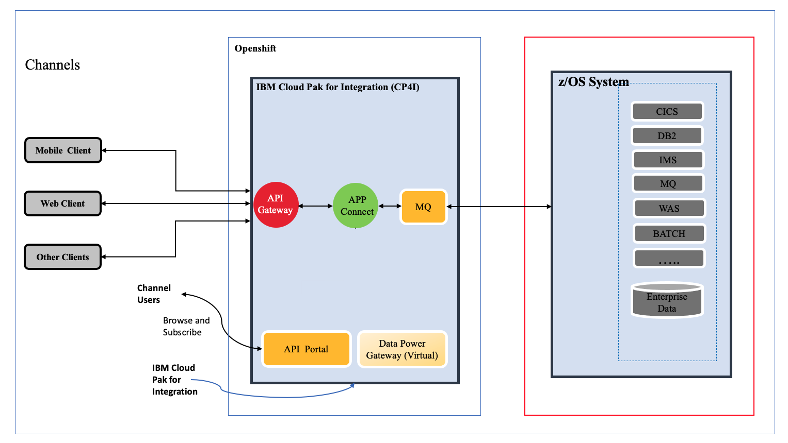
Detailed Solution Flow
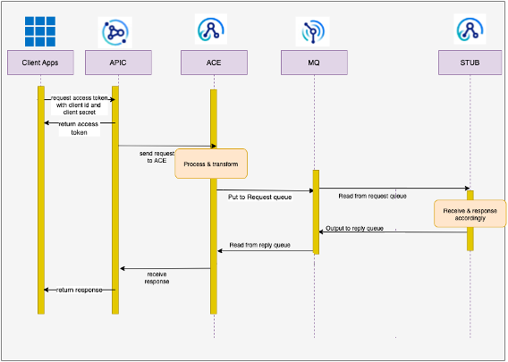
List of Software Products Used In Scenario2

The Cloud Pak for Integration services that we will be used are:
IBM App Connect Enterprise
IBM Cloud Pak for Integration includes a market-leading application integration capability called App Connect Enterprise (ACE). It enables the implementation of API and event-driven integrations and provides extensive adaptation to on-premises and cloud-based applications. It provides tooling that is optimized to the users' skillsets, so that they can be productive in a matter of hours and achieve real results in days.
Powerful underlying capabilities facilitate the implementation of even the most complex integration patterns. As a result, data can be moved quickly, accurately and robustly.
IBM API Connect
IBM Cloud Pak for Integration includes API Connect as an integrated API management offering, where all of the steps in the API lifecycle, and the actions that surround it, are performed within the offering.
The steps of the API lifecycle include:
- Create
- Run
- Manage
- Secure
- Socialize APIs
With API Connect, you can perform all of the lifecycle steps in a single integrated offering, removing the requirement to use multiple API management offerings to obtain the same capability.
IBM Enterprise Messaging (MQ)
IBM Cloud Pak for Integration includes MQ, that can transport any type of data as messages, enabling businesses to build flexible, reusable architectures such as service-oriented architecture (SOA) environments. It works with a broad range of computing platforms, applications, web services and communications protocols for security-rich message delivery.
IBM MQ provides a communications layer for visibility and control of the flow of messages and data inside and outside your organization.
An application has a choice of programming interfaces, and programming languages to connect to IBM MQ.
IBM MQ is messaging and queuing middleware, with several modes of operation:
- Point-to-point
- Publish/Subscribe
- File transfer
Applications can publish messages to many subscribers over multicast.
IBM Cloud Pak for Integration - Configuration
4.5. Integration Dashboard - Deploy a local integration server
------------------------------------------------------------------
High Level Architecture
Below is the high level architecture that we plan to implement as part of this scenario.
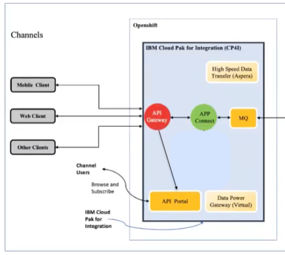
Prepare Client Tools
Make sure that you setup/prepare the below pre-req before proceeding.
IBM App Connect Enterprise (ACE) Toolkit Setup
Refer to the instruction here
Openshift Command Line Interface (CLI) Setup
Refer to the instruction here
Mailtrap SMTP Setup
Refer to the instruction here
Messaging Queue (MQ)
Check & Create Queue Manager
Go to IBM Cloud Pak home. Check the IBM Cloud PAK URL from Openshift Route cp4d or as per given by the instructor.

Login to IBM Cloud Pak using the IBM provided credentials (admin only).

Use IBM provided Authentication (admin only) and log in with admin and its password.
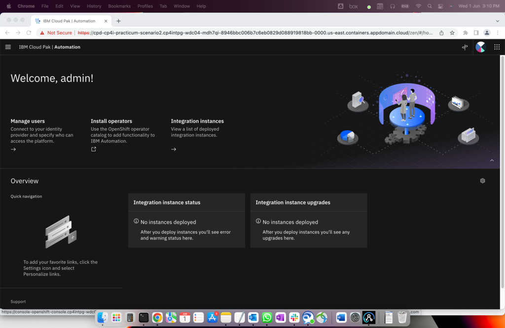
Go to IBM Cloud Pak Home. You can verify the currently added/configure instances from Menu -> Integration Instances.
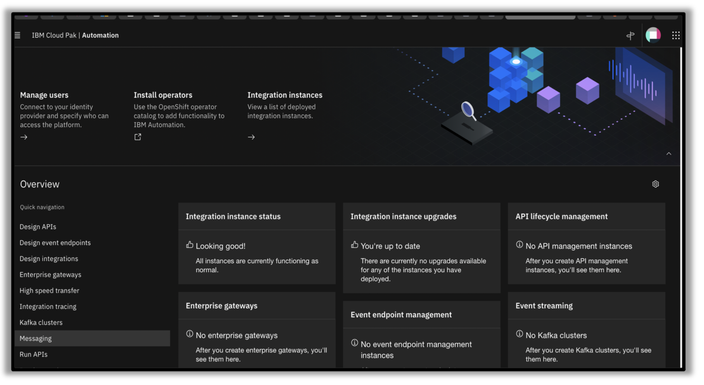
The below instances should already be pre-created for you.

Click on Messaging as highlighted in the screen below. (Menu -> Run -> Messaging)
This will redirect to a Messaging screen as below. If there MQ Console does not appear,Click on Create an instance to create a new queue manager instance. If MQ Queue Manager appear, then you can skip creating queue manager.

Alternatively Queue Manager can be created from Menu -> Administration -> Integration Instances -> Create An Instance+. Select Messaging Option and proceed as below.
Select Quick start option from this screen, and click on Next.
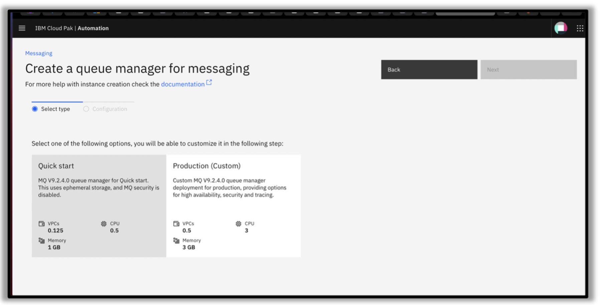
Modify the details for your queue manager as below:
- License acceptance – Toggle the button from OFF to ON state

- Select Type of availability from dropdown as SingleInstance

- Select Type of Volume from the drop down as persistent-claim
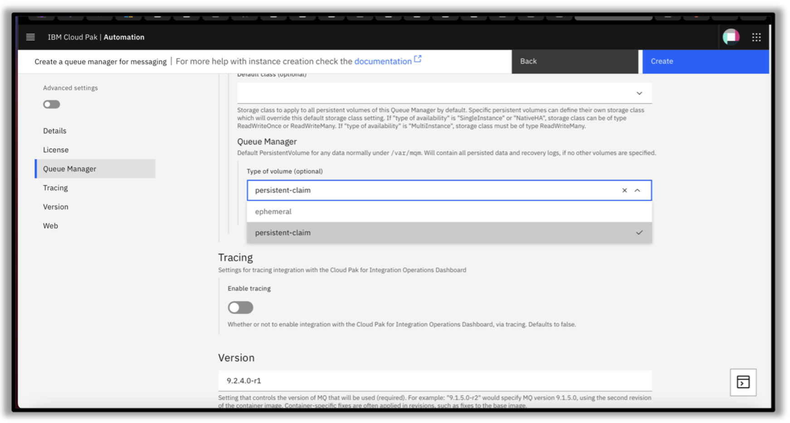
Lastly click on Create from the top right corner and queue manager will be created. You will be redirected to a new page, showing the details of your newly created Queue manager.
The Queue Manager Name is always QUICKSTART unless the name was changed from the advanced properties in the final Creation Screen. Need to toggle the Advanced option to see the advance details.
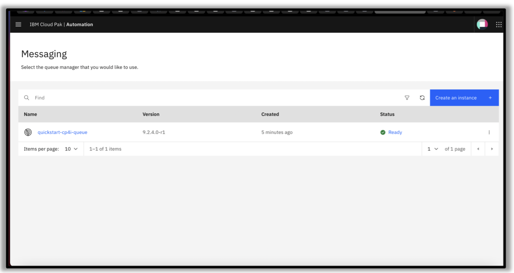
Click on queue manager name --> It should open up MQ Console
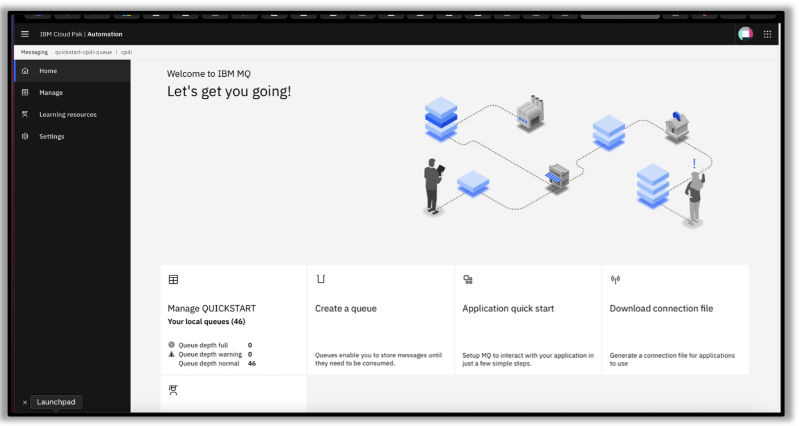
Click on manage --> quickstart to open queue manager

Create Queue
Click on Create icon to create the queue.

Select a Local Queue.
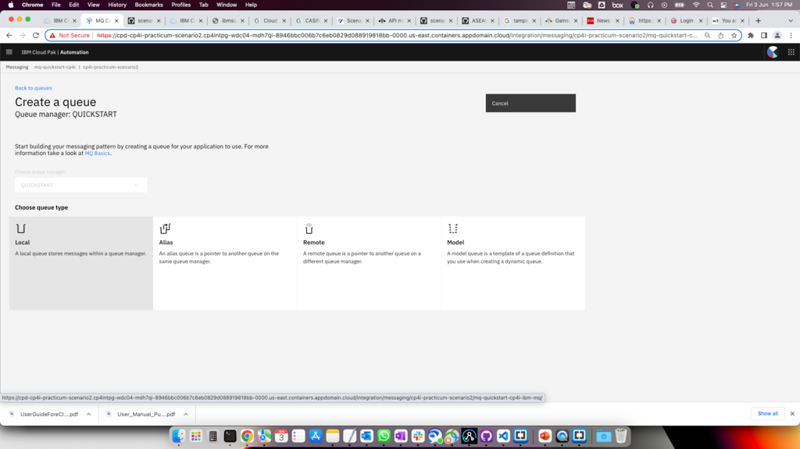
Provide the details of the queue and click create.

Queue will be created shortly.

Configure Default Channel Security**
There are different layers of authorization and authentication configured on the Channel access. To simplify the exercise, we will proceed to disable to Channel security authentication and authorization using the script mq_ace_lab.mqsc . Below steps will assist to disable.
Copy Login Commands to login to oc client.
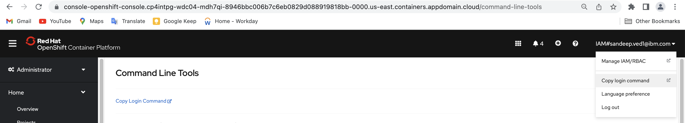
Login to Openshift cluster using oc client.

oc login --token=sha256~xxxxxx-xxxxxx-g --server=https://servername:30273
run below command to see all your projects.
oc projects
Run below command to switch to your project.
oc project cp4i
Run below command to see the pod name of the mq queue manager.
oc get pods | grep -i mq
Note the MQ Queue Manager POD Name. eg. quickstart-cp4i-ibm-mq-0
Change Directory to the location of your mqsc file. Use the following command to upload mqsc file to the MQ pod. QUICKSTART is queue manager name.
oc exec -it quickstart-cp4i-queue-ibm-mq-0(this is your pod’s name) runmqsc QUICKSTART(QMGR-Name) < mq_ace_lab.mqsc
This script performs:
Disable Chlauth security
Disable clientauth security
Disable user security on MQ objects level
The above command should succeed with below lines in the end.
94 MQSC commands read.
No commands have a syntax error.
All valid MQSC commands were processed.
Note the default channels details. Go to the Applications Tab for the Queue Manager that you created.

Click on App Channels link in the left pane. Click on the Filter and Select Show System Channels.

You should be able to see the System Channels. Note the default channel to be used for MQ Communication.

Integration - ACE to MQ
Integration has the following components:
Prepare - Asset into IBM ACE Toolkit
Open IBM ACE Toolkit under a workspace and create a REST API project.

Give it a name and select the specification as Swagger 2.0 Click Finish.
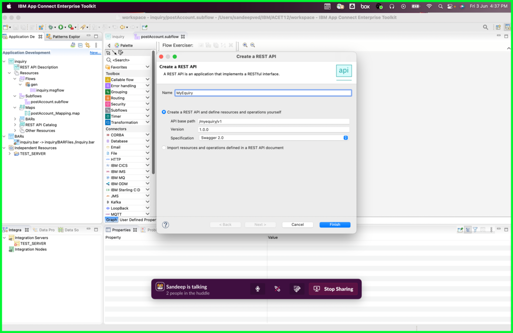
Open the REST API Description. In the right Pane, Under Resources, Click on + icon to create a resource.

Enter the resource path and select the operation as post. Click Apply.
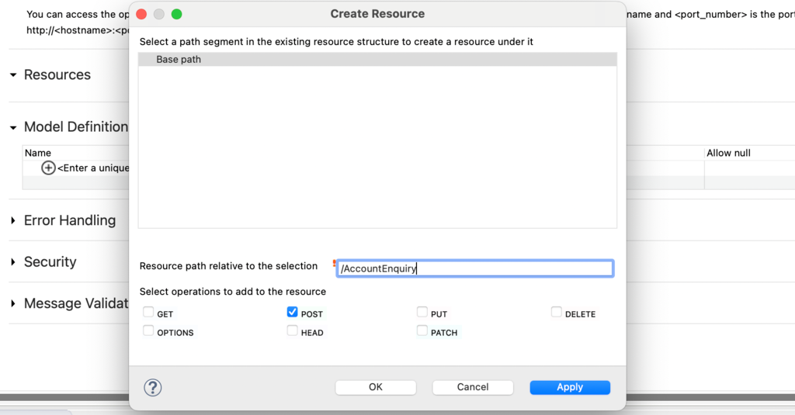
A New resource will be created.
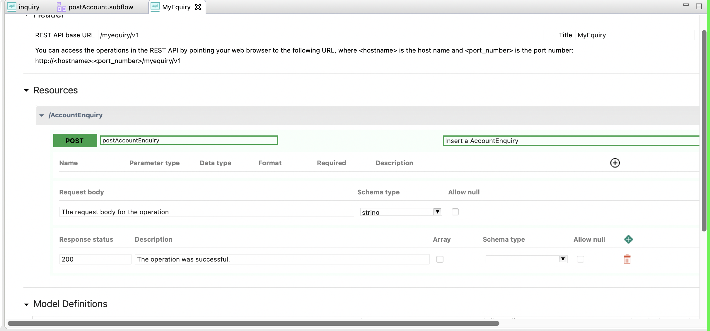
Click on the subflow icon or this new resource.

New subflow editor will open. Drag the IBM MQ -> MQ Output Connector from the transformation section in the left toolbox.

Connect the Boxes together.

Find the MQ Queue Manager Service IP address from the “openshift console” or oc client (oc get svc | grep -i mq).

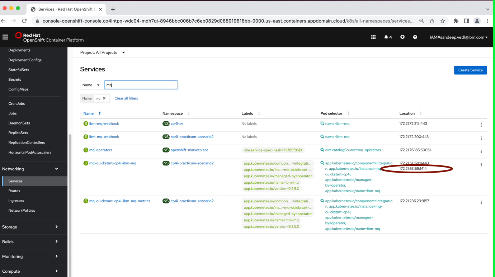
Click on the MQ Output and configure the MQ Details. Enter the Queue Name.

Enter the MQ Queue Name in the Basic Tab. Then in the MQ Connection tab, Enter the MQ Connection Details like Queue Manager Name, Queue Manager Host Name (Service IP), Listener Port no (1414 Default), Connection Channel Name (default – SYSTEM.DEF.SVRCONN).
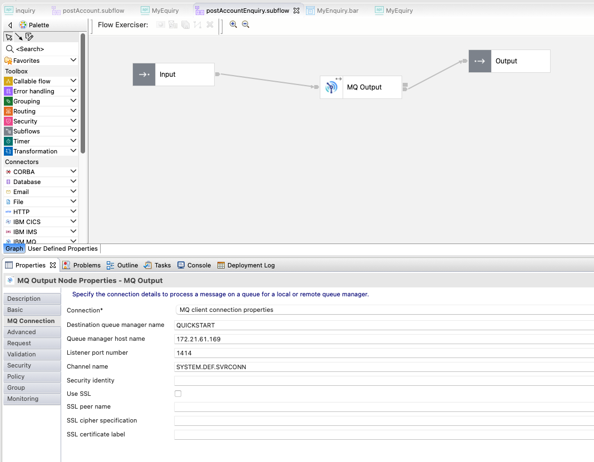
If you have a policy for MQ EndPoint,then you can configure the policy name in the policy tab here in the format {MQPolicyProjectName}:PolicyName, so that it can be used as a configuration for the integration server. In this case, above details on MQ Connection tab are not required. The Policy Project Creation Reference is here.
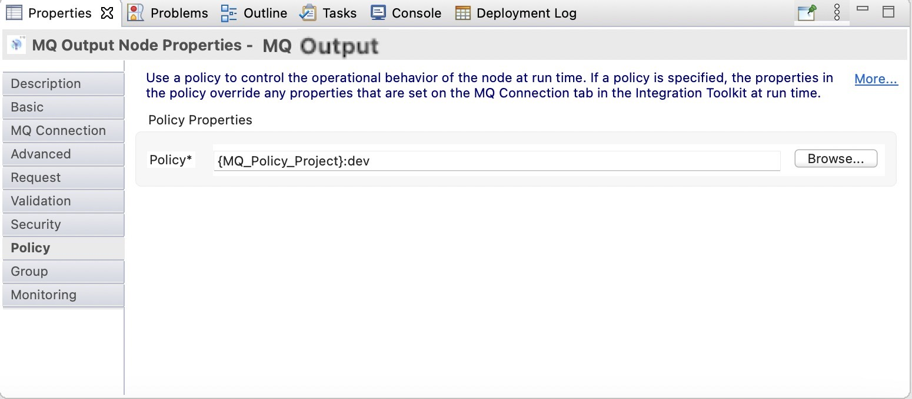
Build – BAR File
Add a new BAR file in the project to package and export the configuration.

Enter the bar file details and click Finish.

Include the newly created project. Add the Build options and Click Save.
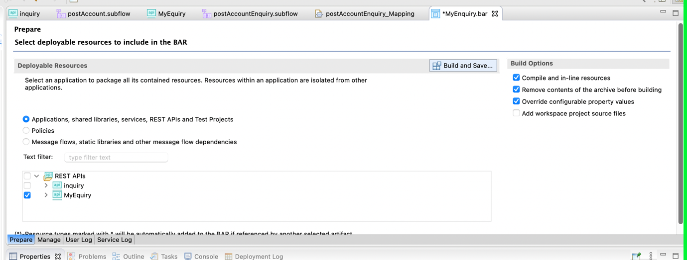
Rebuild BAR and save file one more time.

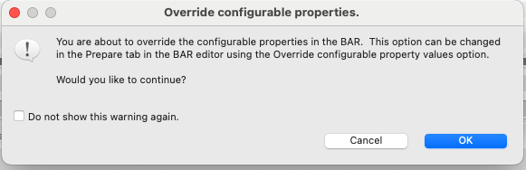

Check the properties of the generated bar file.
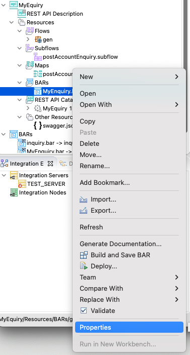
Copy the bar file path or open it in finder window.
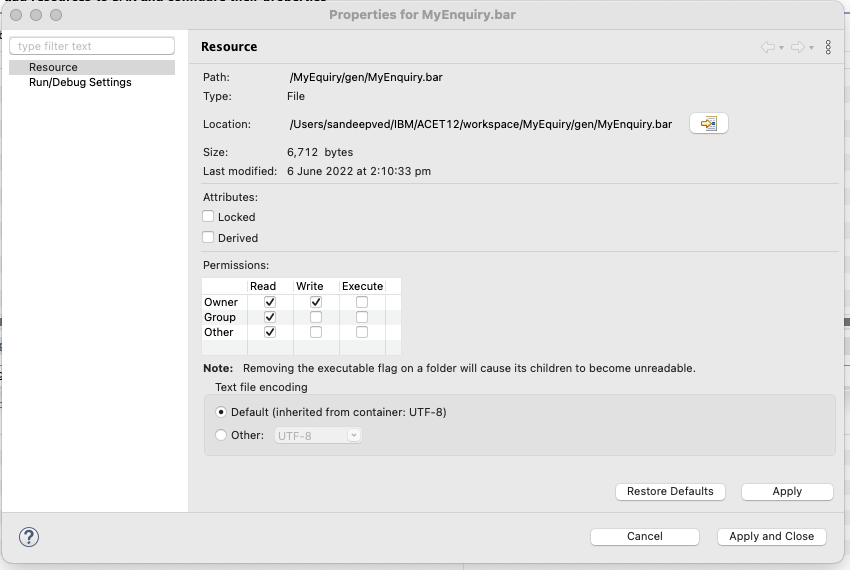
Integration Dashboard - Deploy an integration server
Proceed to create a Integration Server in CP4I Console. Click on Deploy Integrations.

Click Deploy a Server and Chose a Quick Start Plan. Click Next.
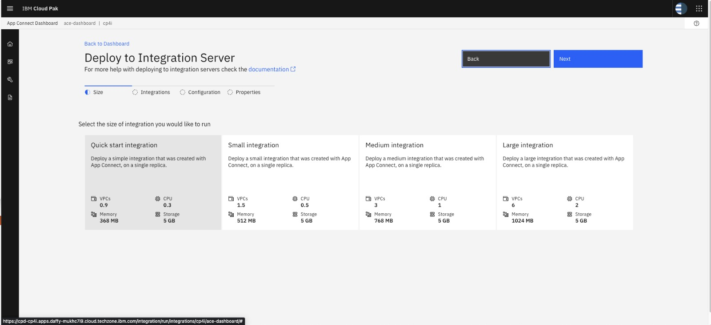
Drag and Drop the newly generated bar file here. Click Next.
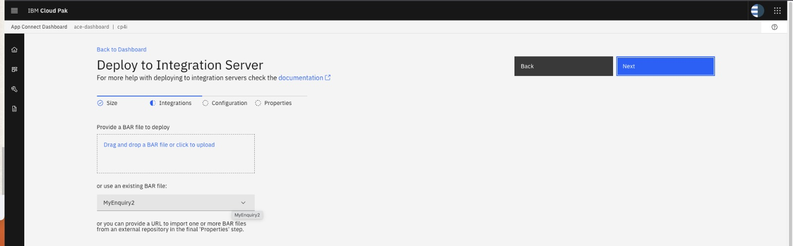
Skip any Configuration to be applied this integration if you have not created a Policy Project. Just Click Next.
If you have a MQ Policy Project, then you can create configuration for it, select it and Click Next. Click here for more details.

Enter the Integration Server Name starting with your Name to make it unique, Select License. Click Create.

The Integration Server will be created and ready shortly. You may refresh the page to check on the readiness status update.

Click on the Server once its ready.

Click on the API.
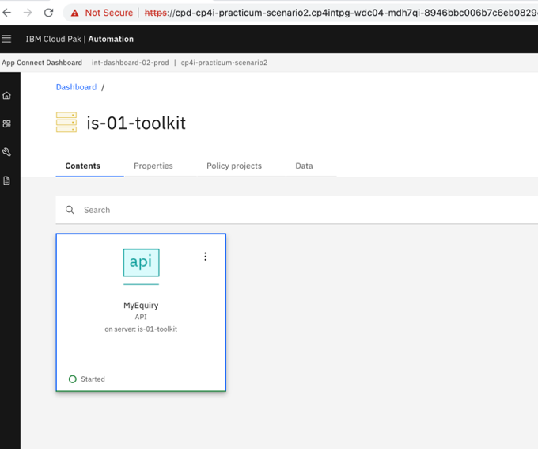
Click on the post/AccountEnquiry.

Click on Try It Tab to test the Rest Interface.
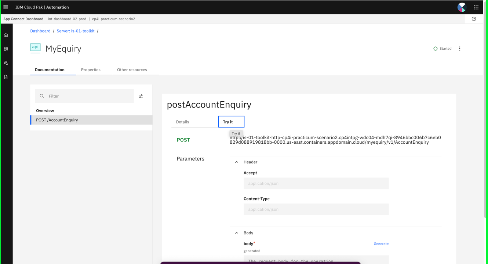
Click on Generate to generate a random test message. Click Send.

The response should come successfully.

This completes the creation and testing of local integration server.
API Connect (APIC)
Navigate to Administration -> Integration Instances.

If there is no existing instance of API Management, Create an instance of the API Connect (API Management) as per following procedure.
If there is already an instance, then you should be able to see instances for API Management, API Management Administration, API-managed enterprise gateway. In this case, just click on the instance name for API Management Administration and continue to create organiation as per next section of Cloud Manager (API Management Administration).

Chose the basic one node plan. Click Next.

Enter the API instance Name and accept the license. Enter the license ID.

The matching Storage Class will be automatically selected. Click Finish.

The following API Connect Instances will be created in about 45 minutes.
API Managed Enterprise Gateway is the data power gateway.
API Management is the instance where we can configure/Develop new APIs Products and catalog. (API Manager).
API Management Administration is where we can create organization, configure authentication settings, SMTP settings etc .
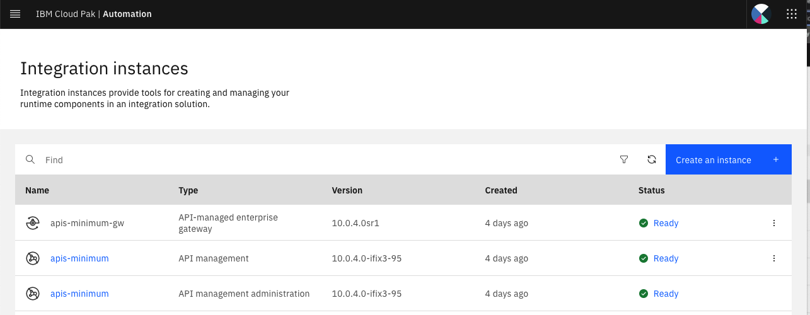

Cloud Manager (API Management Administration)
Create Organization
Click on the API Management Administration Link to open Cloud Manager Console.
Click Manage Organization.

Click on Add to create an API organization which is like a logical separation of multiple API users.
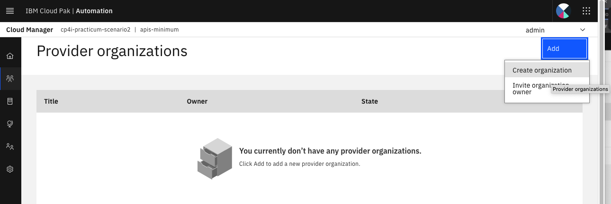
Enter the Organization Name.

Change the User Registry to Common Services User Registry. Enter the existing user name as admin. Click Create.


Configure SMTP for notifications
Click on Resource’s link in the left pane. Click on Notification Link in the left pane.

Click on Create button to create a new SMTP Server.

Add a new smtp server for email notifications. You can add any smtp provider eg. Sendgrid or mailtrap or any other.

Click test email to test the connection. Enter the recipient email id and click Send Test Email.

The email should be sent successfully. You can verify this only through the mailtrap inbox. It will not land in the actual reciever inbox.

Click Save to save the config.

Also update the same email smtp settings for the Dummy mail server as well.

Configure admin email id
In the Cloud Manager, Under Manage Organization, Go to Logged in User (admin) Settings and click My Account.

Update the email id for the current account. Very Important. Otherwise later you will not be able to create a portal service under a catalog.

API Manager (API Management)
Click on the API Management Link to open API Management Console. If you see below picture then your Organization is not set correctly.

After setting the organization correctly, the API Manager should look like this.

Develop API
Click on Develop APIs and products. Create a new API. This will encapsulate the API created on the ACE.
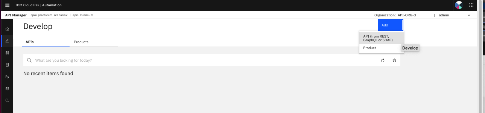
Chose the default option "From Target Service". Click Next.

Provide the details for Target service.
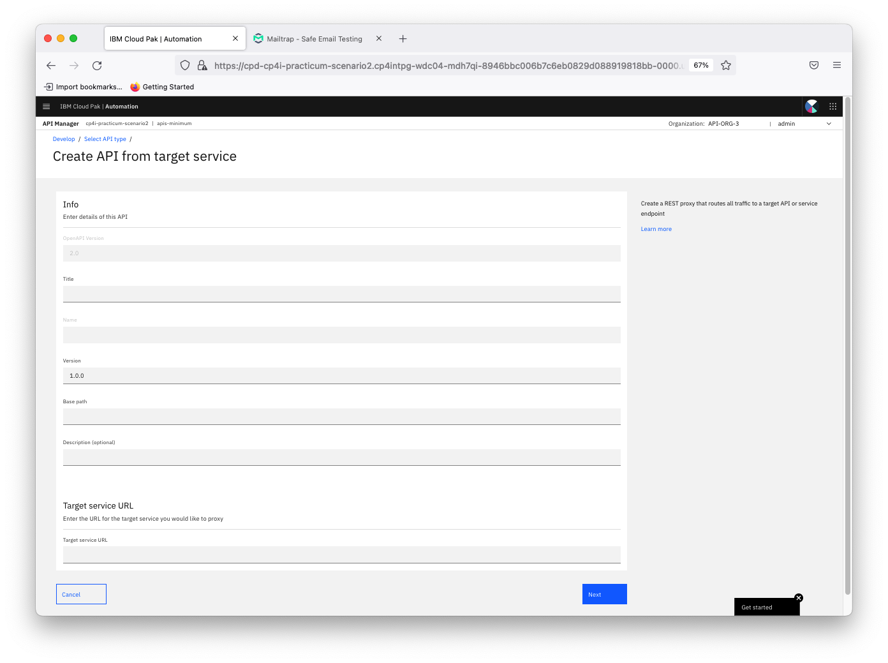
Note the Target Service URL from Integration Dashboard that we created earlier.

example, http://hostname/MyEquiry/v1/AccountEnquiry
Enter the title of the API. This will also create an endpoint / base path using which the API can be called and it will just redirect the request to Target Service URL.

Click Next.
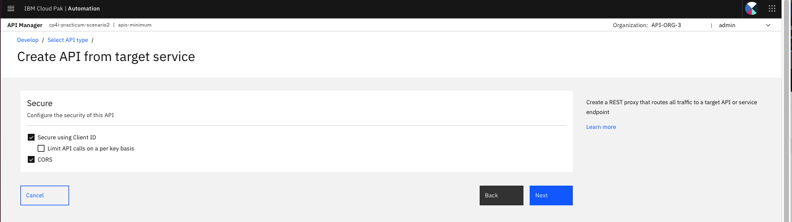
Click Edit API.
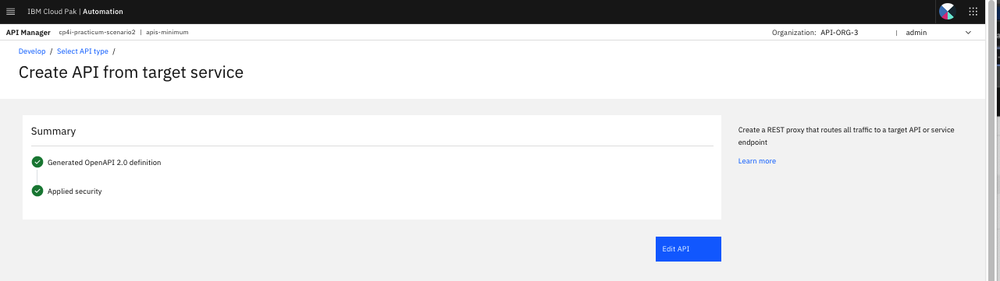
Configure API
After Clicking Edit API, API Design Screen will open.

As we are exposing only post service in the backend we can delete the other operations from here.

Click Save.
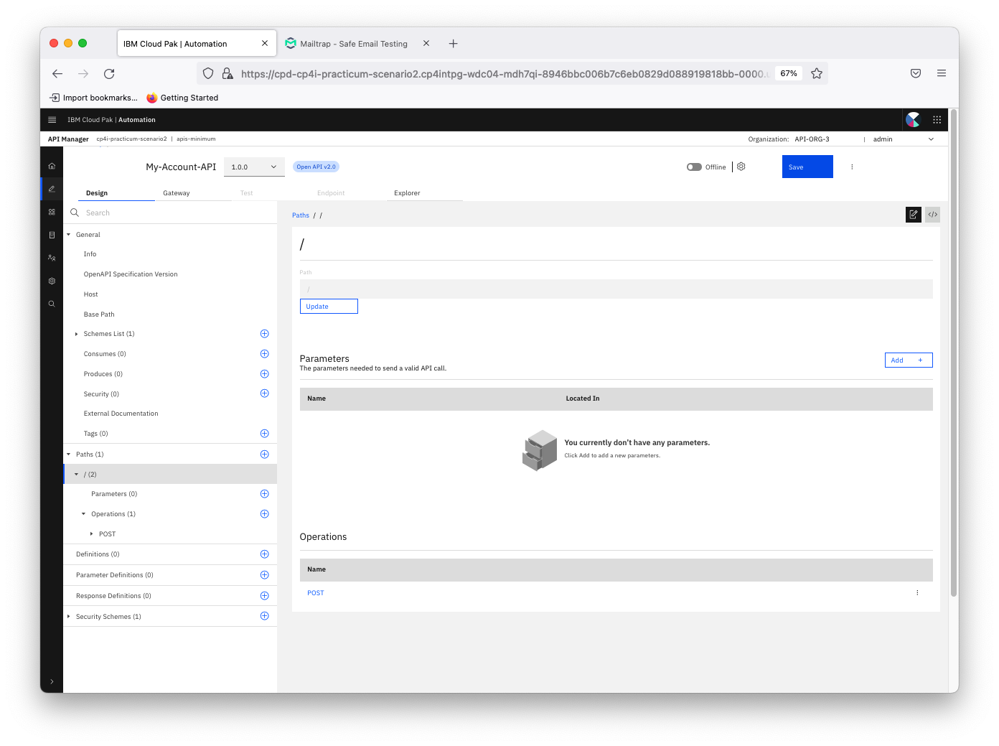
Under Security Schema Click Add to add another security schema.

Select apiKey as the security definition key.

Enter the details as below.

Client Secret is added as security schema. Click Save.

Go to General -> Security . Edit the security schema name.
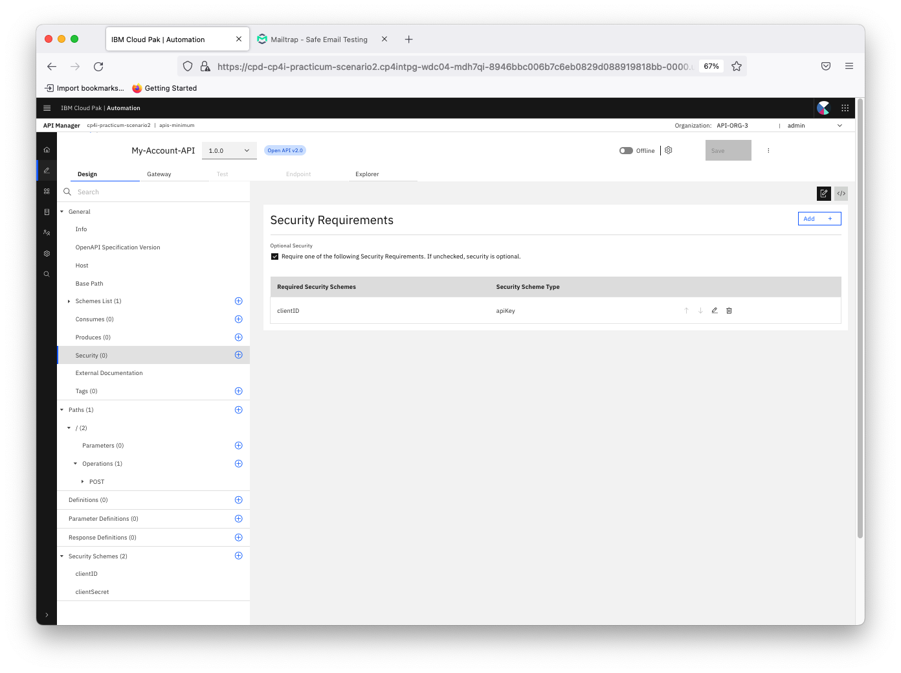
Select both parameter and Click Submit.

Click Save.

Now make this API online so that it will be published in a development sandbox.
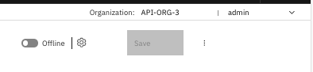

Develop Product
Go to API Manager Home again and click on "Develop API and Products".

Now we need to package this API into a product. One product can have multiple APIs.

Click Add -> Product.
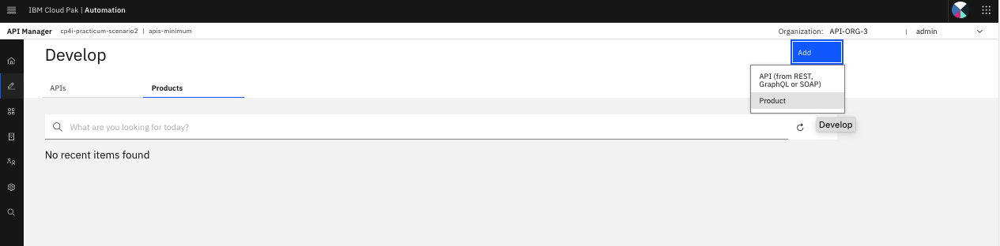
Click Next.
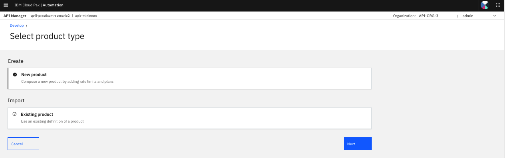
Give a product Name. Click Next.

Select an API to be added into this product. Click Next.

Review the plan details. You can more plans by clicking on Add Button. Can define the new plan name and rate limit (eg. API Calls Frequency). You can add arbitary plans and API Calls Frequency.

Click Next After adding the required plans.
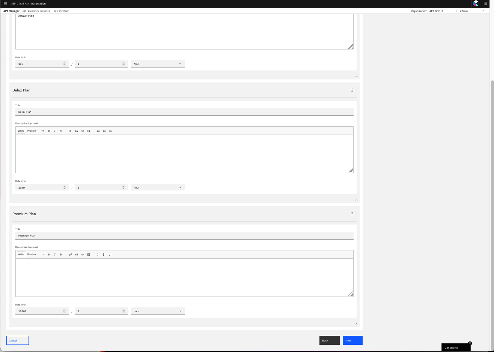
Click Next with default options.
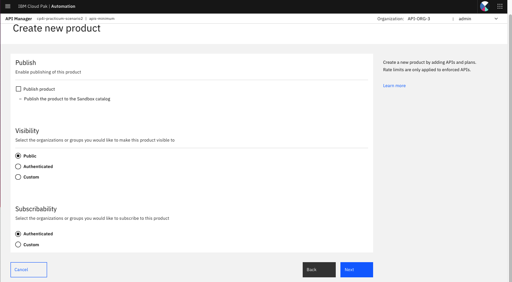
Click Done. We will publish it separately later after creating catalog.

New product is added with the new API.
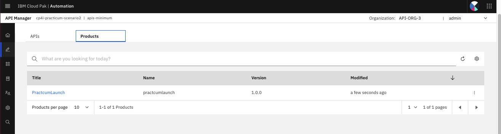
Go to API Manager "Manage Settings" to update the email Notification settings.

Go to "Notifications". Click Edit.
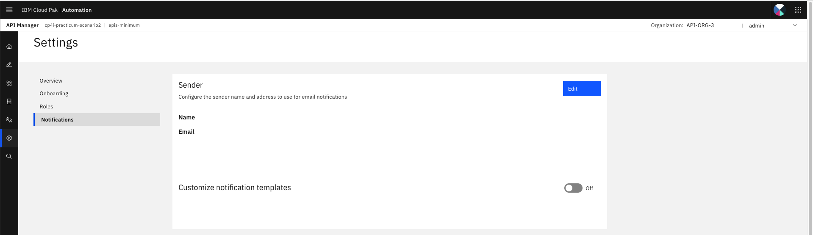
Configure the sender name and email address.


Create Catalog
Now we can create a catalog. One catalog can contain one developer portal where this product can be published. We can have a internal and external catalog where internal catalog is for internal organization and external is for external users.
Go to manage catalogs under API Manager.

Create new Catalog.
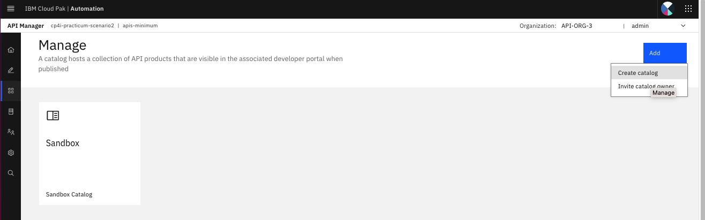
Enter a name and Click Create
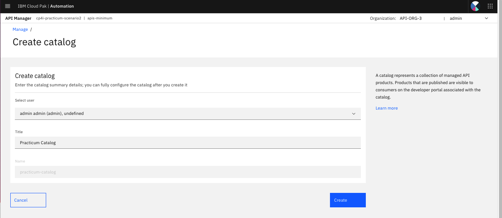
Open the new Catalog and navigate to Catalog settings.
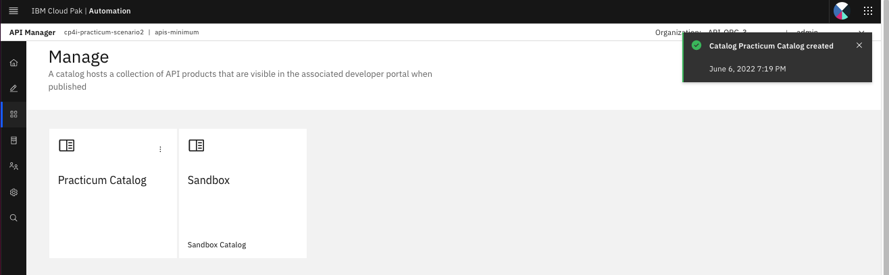

Create a developer portal here. Click Create. If the email if is not updated for the logged in user account, then there will be an error mentioning so. Update the admin user email id from Cloud Manager -> My Account as explained earlier. Also make sure smtp settings are correct under Cloud Manager notification settings.

Select the portal service as "portal-service" and Click Create.

It will take a few minutes for the portal service to be ready. You will receive an email once its ready to set the password for the portal admin account.

Note down the Portal API URL from Catalog Settings -> Portal . eg.
https://hostname/api-organization/practicum-catalog
(optional) Once you receive the email to set the password click on that link and set the password for the admin account for API Manager.
Publish Product
In the original API Manager Window, Now lets publish the product to the new catalog from API Manager first. So it can be visible in this catalog.
Go to API Manager Home and click Develop APIs and Products. Go to Products Tab. Select the product settings and click Publish.
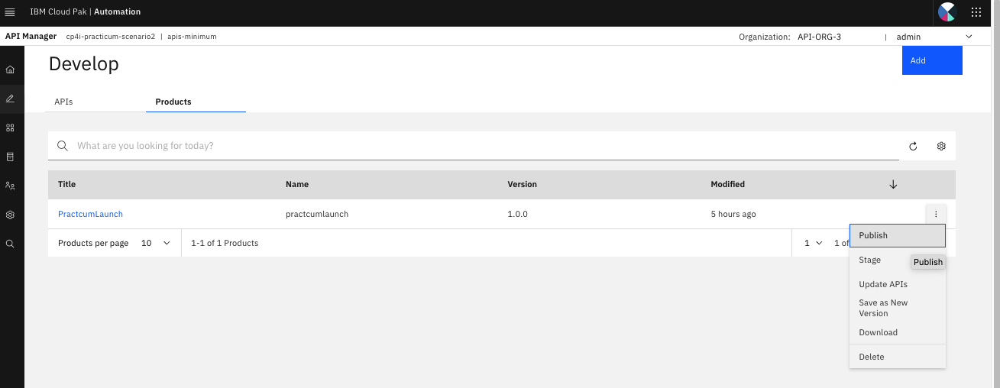
Select the new catalog.Click Next.

You can set the catalog visibility to Authenticated users. Click Publish.


It will be published shortly.
API Connect Developer Portal
Open the Portal API URL as noted above in the browser.
Note: Use Mozilla Browser only for this as there will be issues with chrome browser with default self-signed certificate settings and chrome will prevent the connection.

Click on Create Account to create a new account.
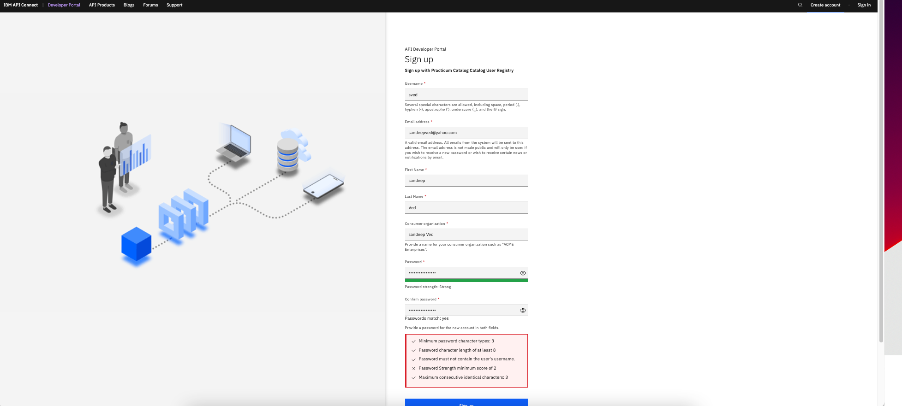
You will receive email with activation instructions.

The account will be activated and you will be able to login with the newid. Sign in with the new id and password.

Click on Create a new App.
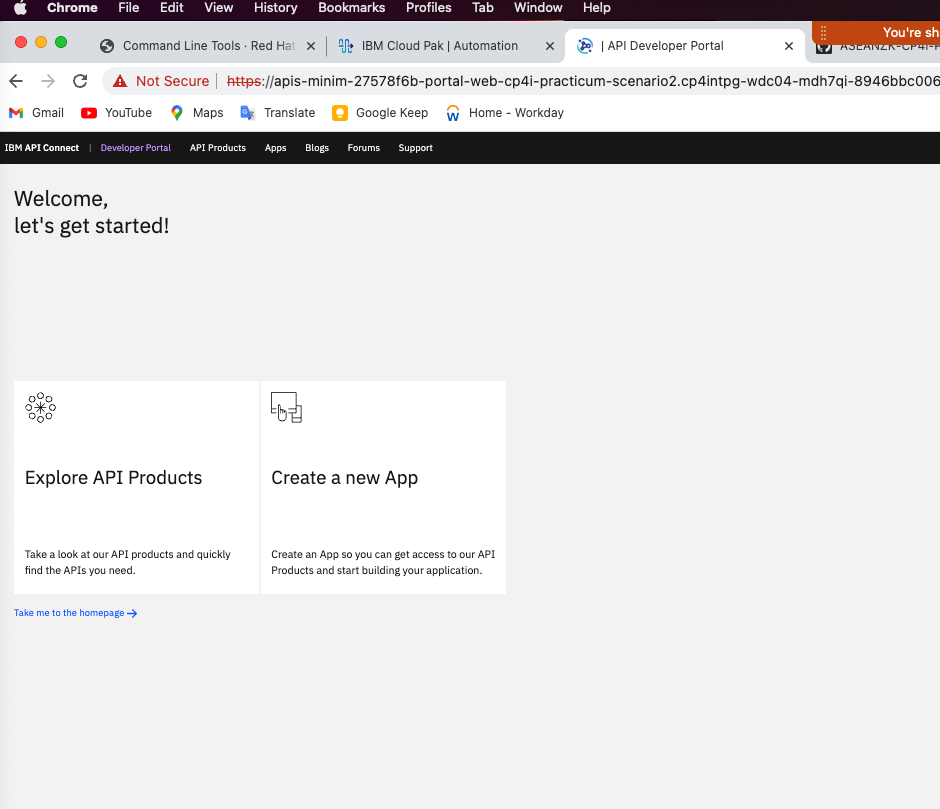
Enter an application Name and click Save.
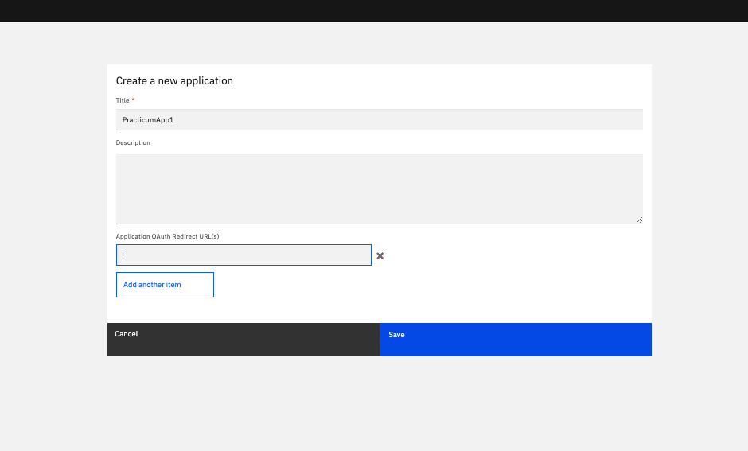
Once application created successfully, note down the Key and Secret for this application. You can not see the Key and Secret for this application after this page. Each application will interact with API Manager/ACE using this client secret. Click OK.
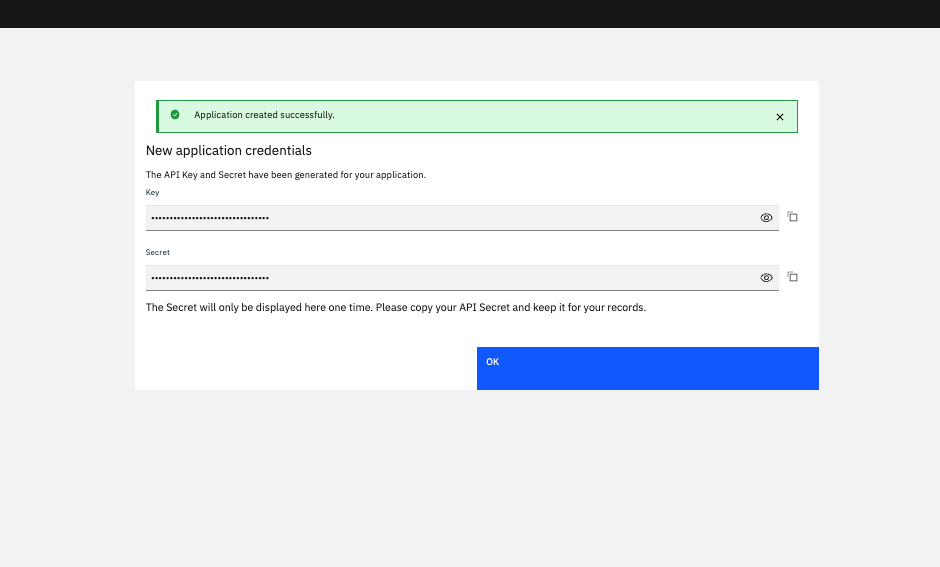
Key: 81b789b18XXXXXXXXXX069ec1757beb9
Secret: 0a38029dXXXXXXXXXXa16f47aa943eb
You can optionally click on verify link to verify your secret against this application’s key.
Click on Why not browse the available APIs to subscribe to API Product for this App.

Click on the published API product.

Just click on the Select button for one of the plan exposed by the product.

Select the application to be subscribed.
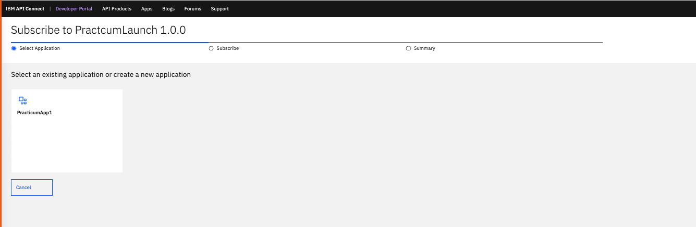
To confirm subscription, click Next.

Click Done.
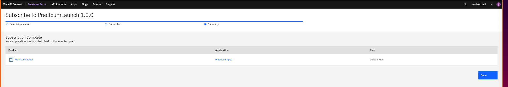
Click on POST / option under overview, in the left pane.

Click on Try It tab to test this API product.
Enter the API Secret for authentication and click Send.

If you receive an error like below, then it could be because you are using any other browser than Firefox. Or the Certificate is not trusted.

Open this URL in the error below in the browser. eg.
https://hostname/api-organization/practicum-catalog/my-account-api/
Accept the certificate. Ignore the error.

Now You can try to send the API call one more time, you should be able to see the response successfully.

Check in the IBM MQ if this message has been stored in Queue Successfully.
Go to Integration Instances -> Messaging instance Name -> Manage -> Queue name
Conclusion
Details are provided above for the setup, installation and configuration of Cloud Pak for Integration for the described use case. We conclude our work on the practicum workshop and expect you have acquired the fundamentals and usage of IBM Cloud Pak for Integration. We wish the best to you and hope the workshop may be helpful in your journey to Modernizing Applications and keeping pace with the technology and trends.